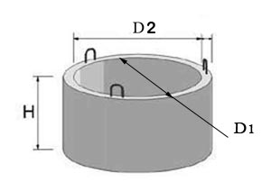
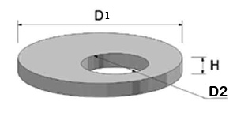
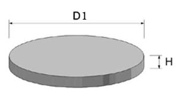

|
Названия изделий |
Размеры, мм |
Вес, кг |
||
|
D1 |
D2 |
H |
||
|
КС 10-9 |
1000 |
1160 |
890 |
600 |
|
КС 15-9 |
1500 |
1680 |
890 |
1000 |
|
КС 20-9 |
2000 |
2200 |
890 |
1480 |
D1- внутренний диаметр;
D2- внешний диаметр;
Н- высота

|
Названия изделий |
Размеры, мм |
Вес, кг |
||
|
D1 |
D2 |
H |
||
|
ПП10-1 |
1160 |
700 |
150 |
250 |
|
1ПП15-1 |
1680 |
700 |
150 |
680 |
D1- диаметр плиты;
D2- диаметр отверстия плиты;
Н- толщина

|
Названия изделий |
Размеры, мм |
Вес, кг |
|
|
D1 |
H |
||
|
ПН10 |
1500 |
100 |
500 |
|
ПН15 |
2000 |
120 |
1000 |
D1- диаметр днища колодца;
Н- толщина
Купить кольца канализационные – такое предложение можно услышать сегодня от множества компаний, присутствующих на строительном рынке. Деятельность нашей компании в строительной сфере позволяет заявить, что у нас можно приобрести бетонные кольца колодезные, цена которых находится в оптимальном соотношении с качеством. Каталог нашей продукции включает сопутствующие изделия, без которых не могут полноценно использоваться ЖБИ кольца: крышки для колодцев и днища колодцев.
Бетонные колодезные кольца, используются при монтаже различных видов колодцев:
Часто ЖБИ кольца применяются при ремонте теплосетей. Следовательно, тип днища, кольца и крышки колодцев определяется его назначением. Следует учесть, чтоцена зависит еще от марки применяемого при изготовлении бетона, являются стволом и горловиной колодца, а крышка и днища колодцев способствуют укреплению конструкции. Судя по тому, что конструкция должна быть прочной и надежной, главным критерием выбора должно быть высокое качество ее изготовления.
Сегодня бетонные кольца канализационные выпускает множество предпринимателей, имеющих различную репутацию. Акцентируя внимание на то, что кольцо железобетонное (ЖБ) эксплуатируется в неблагоприятных условиях, вторым критерием выбора должно быть – предназначение заводскому изготовлению. Со временем бетонное кольцо, цены в Киеве на которое ниже рыночной, может трескать или крошиться. Это вызвано несоответствием сырья, которое не выдерживает влияний следующих факторов:
На железобетонные кольца для колодцев цены могут снижаться у недобросовестных производителей за счет снижения качества бетона и арматуры.
Покупая канализационные кольца заводского изготовления, вы обеспечите себе гарантию приобретения качественной продукции. Наличие широкого ассортимента типов и размеров позволяет выбрать оптимальную продукцию и сопутствующие к ним изделия:
Преимущества, которые имеют наши бетонные кольца для канализации, обусловлены следующими факторами:
Критерием выбора ЖБИ колец может стать личное отношение к строительству. Если вы относитесь к нему с полной ответственностью, то, наверняка, выберите продукцию лучшего качества и предпочтете купить крышки колодцев заводского изготовления, а также купить днища колодцев, обеспечивающие прочность конструкции. Бетонные кольца канализационные, обладающие высоким качеством, проявляют следующие свойства:
Купить днища колодцев сегодня можно с ориентацией на их высокое качество и доступную цену. Купить крышки колодцев и прочие изделия можно с гарантией их доставки на объект.
Цена на бетонные кольца для канализации зависит от габаритов конструкции, диаметра арматуры и марки связующего вещества. Поэтому сегодня можно купить крышки колодцев, днища и кольца хорошего качества в широких ценовых пределах.